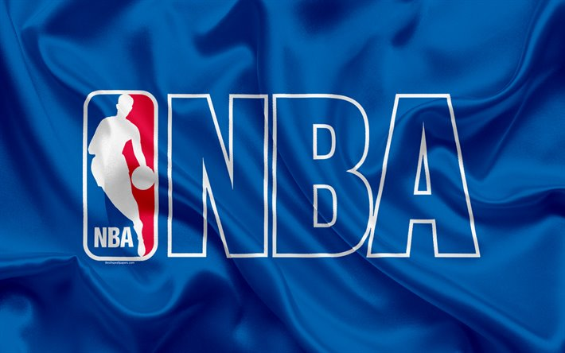

April, 2021
NBA Games & Players
Data Analysis

By using NBA data between 2003-2020, I have performed analysis and visualized some of the results.
Also, answered set of questions about players’ performances and teams’ performances by my analysis. Comparison of teams by several matrices like home wins, away wins, etc. Comparison of players by their 3-Pointers, Free Throws, Points, etc.
Technologies: Python, Numpy, Pandas, Matplotlib, Data Analysis, Ipython, Data Visualization
February 2021
US COVID-19
Data Analysis

I have performed analysis on COVID-19 cases, deaths and vaccines datasets for all counties and states in the United States. Also found out how vaccines impacted on new cases, deaths percentage and whether any state or county reached to herd immunity ( more than 70% of population is vaccinated ). Performed visualization of my results as well.
Technologies: Python, Numpy, Pandas, Matplotlib, Data Analysis, Data Cleaning, Jupyter, Seaborn
June 2020
IBM's Applied Data Science
Capstone Project

Data Analysis of the different Indian Cuisines across New York State to decide which restaurant has best average rating from dataset of different restaurants provided by IBM.
Also derived which is the best place to stay if you prefer Indian Cuisines. Also, visualized neighbourhoods by their ratings using python libraries.
Technologies: Python, Folium, Numpy, Pandas, Matplotlib, Data Analysis, Ipython, Data Cleaning
May 2021
2020 US Presidential
Election Donations Analysis

From the dataset of more than 30 million donations, I analyzed how much money each candidate received in 2020 US Election, also finding mean, median of donations for each candidate, unique contributors, monitoring smalll contributors ( Donation amount less than 50$ ) and their impact on Presidential Campaigns.
Technologies: Python, Apache Spark, SparkSession, PySpark, AWS EC2, AWS S3, Numpy, Pandas, Matplotlib
April 2020
Daily Checklist & Daily
Routine iOS Application
To organize everyday busy life, we have come up with this daily routine application which will helps us to schedule our daily routine and maintain daily checklist. In this to-do list app, we can update our daily routine as well as weekly tasks. We can also delete and add the task from morning to night and set reminder, we can also see the previous task performed in previous months, weeks and days. .
Technologies: iOS, Apple Xcode Toolkit, iOS SDK, React Native, Xamarin
June 2019
Campus Recruitment
Application
Campus Recruitment System as the name states is used for helping the companies to get the best candidate and directly come in contact with the student, in the same way student get to know about the jobs and the companies directly.
It provides transparent communication between company hiring candidates and job seeking students.
Technologies: Android Studio, Firebase Database, Android SDK, Java